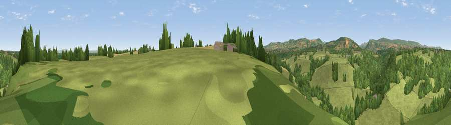

Viewpoint near Ifton Heath
#24340 in England · top 83% of its area beats it · near Ifton HeathThe view, rendered

A 360° render of this exact spot computed from the terrain model, tree cover and land cover — summer colours, afternoon light, calibrated against photographs of famous viewpoints. Real trees, hedges and buildings will differ in detail.
The panorama
Grey silhouette: terrain skyline in each direction (720 bearings, Earth curvature and refraction included). Dashed green: skyline with trees (+15 m) and buildings (+8 m) as obstacles. Blue strip: how far the ground is visible on each bearing.
Where the view opens
Wedge length = distance to the farthest visible ground on that bearing (vegetation-aware). Rings at 10, 25 and 50 km.
What fills the view
49% woodland · 47% grassland · 3% cropland
Angular shares of the visible panorama (visual magnitude), not map area. Landscape diversity 0.37 (0–1 Shannon).
Key numbers
More beautiful places nearby
The staircase of upgrades: each row has a higher view potential than everything closer. Driving times are estimates from straight-line distance, calibrated against real road routing — check an actual route before setting out.
| Place | Direction | Drive | Score |
|---|---|---|---|
| Viewpoint near Ifton Heath | S · 2 km | ~5 min | 53.9 |
| Viewpoint near Bronygarth | WSW · 6 km | ~14 min | 62.0 |
| Viewpoint near Bronygarth | WSW · 7 km | ~14 min | 74.7 |
| Viewpoint near Trefonen | SSW · 14 km | ~26 min | 75.0 |
| Viewpoint near Bickerton | NE · 22 km | ~36 min | 76.4 |
| Viewpoint near Harthill | NE · 24 km | ~39 min | 78.5 |
| Viewpoint near Harthill | NE · 24 km | ~40 min | 80.5 |
| Viewpoint near Halfway House | S · 26 km | ~42 min | 83.3 |
52.94792, -3.00938 · source: screening · position refined by local search. Computed location — check access rights before visiting.